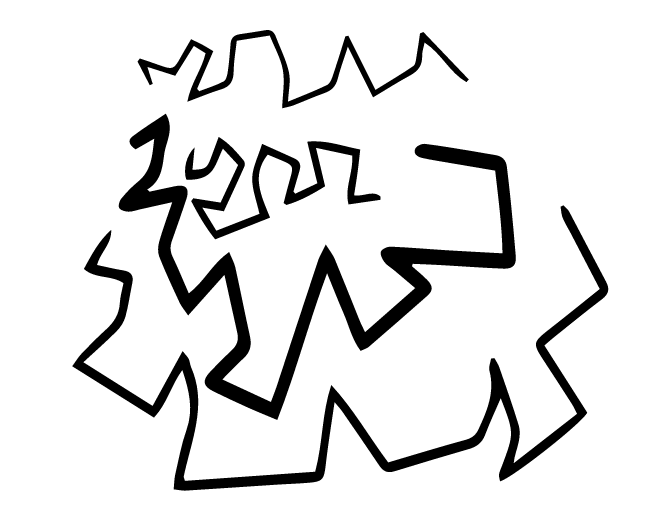

Zigzag lines: These are a series of diagonal lines with sharp turns in alternate directions. They are used to suggest feelings of nervousness and confusion. Figure 1.28 shows zigzag lines.

Curved lines: These are lines which change direction gradually to suggest wave-like movement. Figure 1.29 shows curved lines.